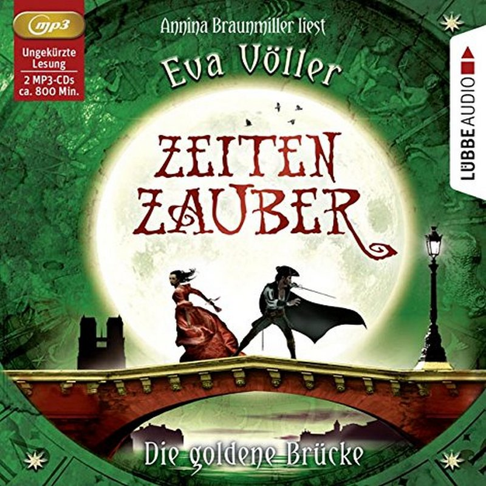

© Lübbe Audio
Nachdem Anna sich dem Geheimbund der Zeitwächter angeschlossen hat, lässt das nächste Abenteuer nicht lange auf sich warten. Mitten in ihrer Abiturprüfung ereilt sie eine Schreckensnachricht aus Paris: Sebastiano ist verschollen - und zwar im 17. Jahrhundert! Anna begibt sich auf eine gefährliche Reise und findet ihren Freund tatsächlich in Paris wieder. Doch es gibt ein neues Problem: Er hält sich für einen Musketier und hat keine Ahnung, wer Anna ist. Schafft sie es, seinem Gedächtnis auf die Sprünge zu helfen?
von Eva Völler
Sprecherin Annina Braunmiller
2 mp3-CDs, 800 Min.